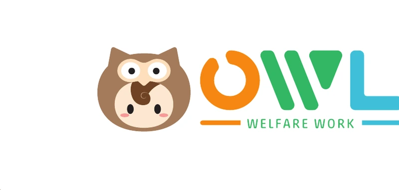

仮モック・数字はサンプル開業を考える人向けの3つの特典です。国の法令・通知と各自治体の公式資料（2026年10月31日確認）で照合して更新した確認版です。
定員・自己資金などを入れると、初期費用・借入の目安・月の収支・返済の見通しが出ます（報酬は福岡市の単価・令和8年度の新規指定で計算。加盟金は仮に0円）。
都道府県を選ぶと、指定申請の窓口・期限・事前相談が分かります（47都道府県を公式ページと照合。確認できない項目は「公式サイトで確認」と表示）。
12問に答えると、契約前に確認したいポイントが出ます（判定ではなく確認の一覧。根拠の種類つき）。
※ 確認用です。数字は目安で、収益や融資の可否を保証するものではありません。最新の手続・基準は各自治体の公式サイトでご確認ください。